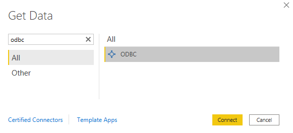

Microsoft Power BI #
You can use the popular analytics platform Microsoft Power BI to access clusters in Starburst Galaxy or SEP using Power BI DirectQuery.
Starburst Galaxy and SEP can be accessed via DirectQuery with the following tools:
- Microsoft Power BI Desktop
- Microsoft Power BI Service
Power BI lets Starburst Galaxy and SEP perform all query processing. This combines their scalability and processing power with the reporting features of Power BI.
Requirements #
It is recommended to connect to Starburst clusters using the latest version of Power BI.
- Power BI 2.100.684.0 (December 2021) and higher. Older versions of Power BI only support import mode.
- Starburst ODBC driver version 2.0.5.1009 or higher.
You can use older versions of Power BI, version 2.99.563.0 and earlier, with the older Starburst Presto ODBC driver. Connecting to Starburst clusters with older versions of Power BI requires the following:
- Starburst Presto OBDC driver version 1.2.16.1016 (32-bit .msi, 64-bit .msi)
- License for the ODBC driver, which you can request from
Starburst Support. Install this license file in the
libdirectory of the ODBC driver installation.
Data connectivity modes #
Power BI can access data from Starburst Galaxy or SEP in the following connection modes:
- DirectQuery: query data using the query engine without importing that data to the Power BI client. This mode is recommended for most use cases as it has the least impact on network or client storage resources, regardless of the amount of data queried.
- Import: import queried data directly to the client machine, for further local analysis with tools like quick insights and calculated tables. Allows for custom SQL which is not supported by DirectQuery. Note that import mode is limited to 1GB of data per query.
- Standard ODBC: use a generic ODBC connection. Allows for custom SQL which is not supported by DirectQuery. Note that a standard ODBC connection is limited to 1GB of data per query.
Connect with Power BI Desktop #
The following sections describe how to connect to Starburst Galaxy or SEP from Power BI Desktop.
DirectQuery and import mode #
To connect from Power BI Desktop using either DirectQuery or import mode, follow these steps:
- In Power BI Desktop, select Get Data > More.
-
Select All > Starburst Enterprise and click Connect.

- Configure the necessary connection and authentication details to access your cluster. You must include a port number, which your network administrator can provide.
- (Optional) Configure any of the following Advanced options:
- Catalog - Specify a catalog to only query a specific data source on the cluster. This option reduces the amount of fetched metadata, and can greatly speed up connection time compared to the default behavior of querying all catalogs.
- Safe metadata read - When enabled, queries do not fail if the catalog is faulty. Reduces query performance.
- Select either DirectQuery or Import as your Data Connectivity mode.
- Select the authentication method.
- Click OK.
- Select the same authentication method and add credentials if needed, then click Connect to establish a connection.
- After the connection is established, use the Data Navigator to browse catalogs, query data sources, and more.
Standard ODBC #
The standard ODBC connection mode requires you to add the ODBC driver to Windows as an ODBC data source. To set up the data source, follow these steps:
- Open the ODBC Data Source Administrator utility.
- Add the ODBC driver as a User or System Data Source.
- Click Apply.
To connect from Power BI Desktop using a standard ODBC connection, follow these steps:
- In Power BI Desktop, select Get Data > More.
-
Select All > ODBC and click Connect.

- Under Data source name (DNS), select the Starburst Galaxy or SEP data source.
- Under Advanced options > Connection string add
host="hostname:port", replacing “hostname:port” with the connection details for your cluster. - Configure the necessary authentication details for your cluster.
- After the connection is established, use the Data Navigator to browse catalogs, query data sources, filter data, and more.
Authentication and Security #
Power BI Desktop always tries to connect with an encrypted connection first. If you are connecting without TLS/SSL, the connector offers the option to connect using an unencrypted connection afterwards.
Starburst Galaxy uses a globally trusted certificate and the default port 443. To use a TLS-encrypted connection with your SEP cluster, make sure the server uses a globally trusted certificate.
If this is not the case, add the server’s certificate to the system trust store, (Certificates > Trusted Root Certification Authorities) before connecting. The certificate can be added for the machine, or for each user running the Power BI connector. In many organizations this is handled automatically as part of the operating system and browser configuration.
Kerberos authentication with Power BI Desktop #
To use Kerberos authentication, Kerberos must be installed for the user and
initialized using kinit, before using the driver. This establishes your user
credentials on the machine.
Select Kerberos in the authentication field and provide the Kerberos Service name.
LDAP authentication with Power BI Desktop #
If your cluster is configured to use LDAP authentication, select LDAP in the authentication field and provide your username and password credentials.
Token authentication with Power BI Desktop #
If your cluster is configured to use a personal JWT token for authentication, select Personal Access Token (JWT) in the authentication field. Follow the instructions provided to you by your administrator to retrieve your personal JWT token, and copy-paste your token into the Personal Access Token (JWT) text field.
OAuth authentication with Power BI Desktop #
If your cluster is configured to use OAuth for authentication, select OAuth in the authentication field. If you are not signed in, click the Sign in button and follow any login prompts that appear.
Connect with Power BI service #
Using the web-based Power BI service requires you to have the on-premises data gateway with the appropriate permissions, and the ODBC driver installed in each Gateway environment.
To connect to Starburst Galaxy or SEP as a data source, follow these steps:
- Log in to the Power BI service.
- Navigate to Setting > Manage gateways.
- Select the gateway, and Add data source.
- Set the Data Source Type to Starburst Enterprise.
- Configure the necessary connection and authentication details for your cluster. You must include a port number, which your network administrator can provide.
- Click Add to create the data source.
Once you have added Starburst Enterprise as a data source, you must connect it to a dataset. For more information on configuring gateway data sources in Power BI, refer to the Microsoft documentation.
Limitations #
-
Self-signed certificate usage for TLS/SSL connections is not supported.
-
Writing and using custom SQL statements is not supported with DirectQuery.
The ODBC standard connector can be used for custom SQL but does not support direct querying.
-
Authentication type and field name customization does not apply on the Power BI service. The following is the mapping of the service field names to their Desktop counterparts:
Service name Desktop name Basic LDAP Key Kerberos Key: Account Key Kerberos: Service Name
Release notes #
Version 5.0.0 #
September 2022
- Add support for new authentication methods:
- Add support for advanced filtering with the built-in regular expression filtering feature in PowerBI Desktop.
- Add an optional Catalog field in the connection dialog. Selecting a catalog with this field reduces the amount of metadata fetched from the cluster.
- Add an optional Safe metadata read field in the connection dialog. When enabled, queries on defective catalogs do not fail, but result in lower performance. This setting is disabled by default.
Version 4.0.0 #
February 2022
- Broken catalogs are ignored when connecting to Starburst Galaxy or SEP. Previously, if any catalogs were broken the whole connection failed.
Version 3.0.0 #
December 2021
- Support for version 2.0.0+ of the Starburst ODBC driver.
- Change query source name to PowerBI-Extension
Breaking changes:
- Remove support for the Presto ODBC driver (prior to ODBC version 2.0.0).
Version 2.0.0 #
April 2021:
- Remove beta flag.
- Change name to Starburst Enterprise.
Is the information on this page helpful?
Yes
No
- Microsoft Power BI
Is the information on this page helpful?
Yes
No